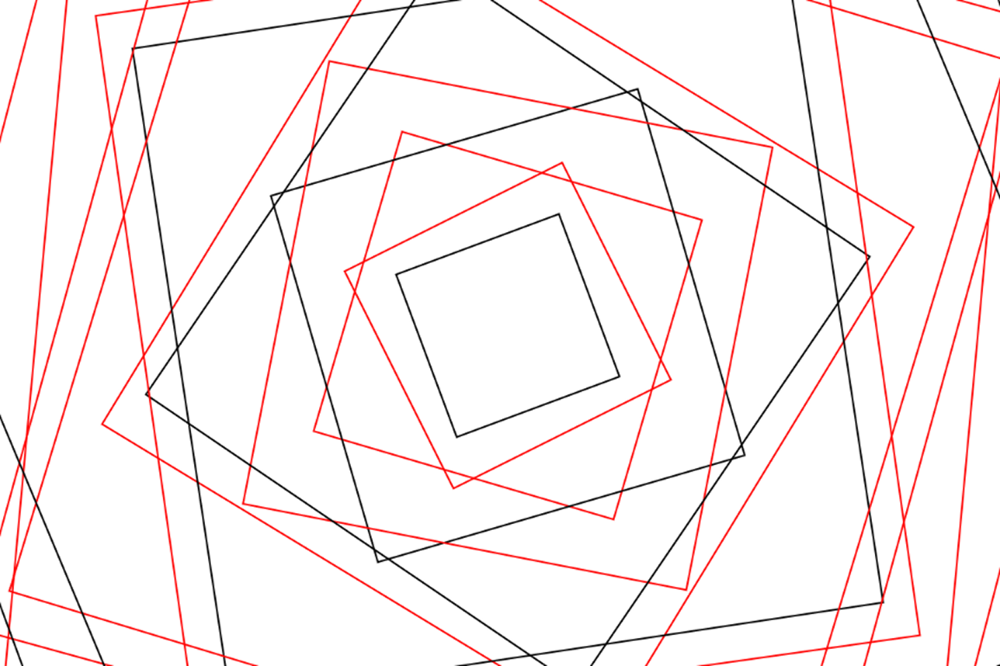
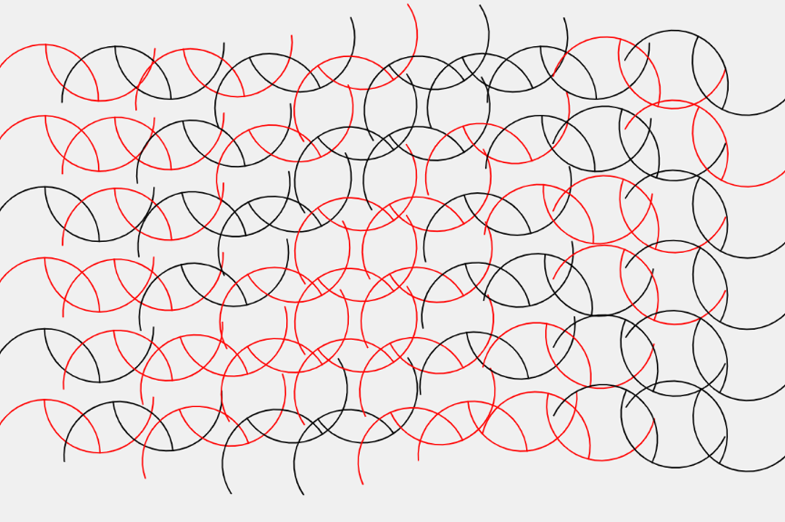

Iteration Generation II — SVG & Pen Plotter

Exploring repeated patterns and visual variations using loops and random values.
View Project →
Experimenting with SVG and pen plotting, also use map to let canvas move.
View Project →week4.1
I kept the concentric square structure from my previous class. In this version, pressing the R key generates a new random seed, and noise() changes the rotation angle of each square to create different patterns. I also added random colors and used an if...else statement to switch the colors randomly between red and black. While drawing the squares, I also wanted to experiment with map(). I used the X and Y positions of the mouse to control a small movement of the whole pattern. As the mouse moves, the squares shift slightly in different directions, creating an effect similar to a 3D phone wallpaper or parallax effect.
week4.2
In this version, I thought about the repetition of a single pattern that we learned in class. By changing the rotation angle of each unit, the overall pattern can create different visual effects. So I wanted to experiment with this approach. I drew two semicircles facing opposite directions in each unit and used noise() to change the rotation angle of each one. Although the basic shape stays the same, different rotations create different variations in the overall pattern.